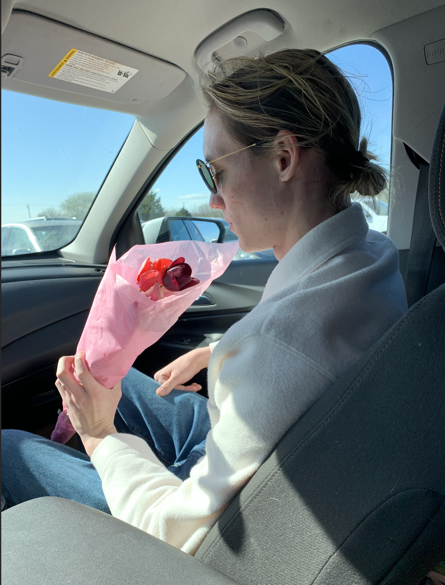
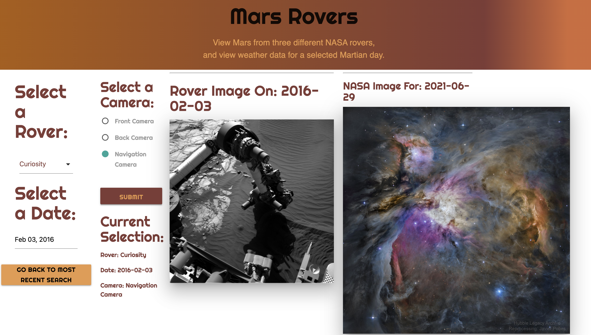
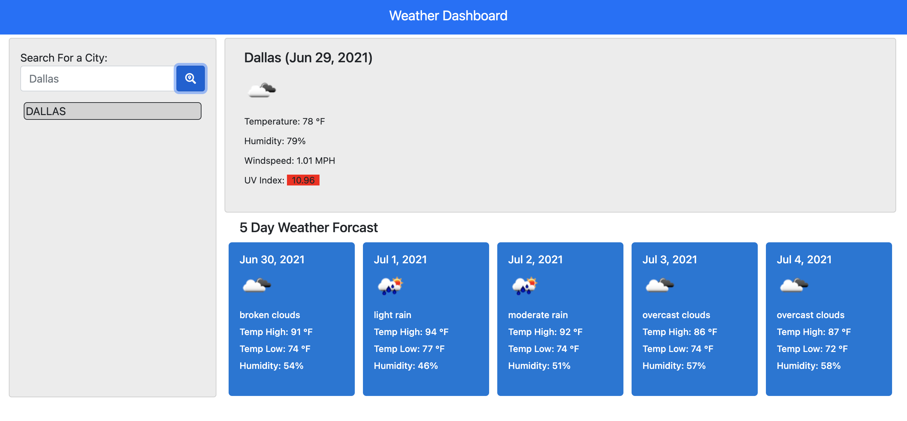
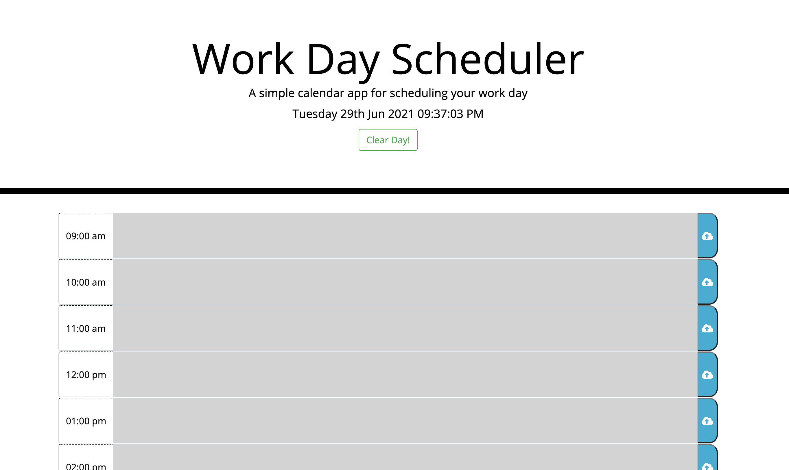

About Me:

Gavin Reid
Full-Stack web developer.
| Midlothian, TX 76065 | (214) 616-0791 | gavinreid94@gmail.com
|
Gavin's Portfolio
First Project!
Weather Dashboard
Day Planner
Contact Me
Name: Gavin Reid
Email:
gavinreid94@gmail.comLinkedin:
gavinreid0Github:
gavinreid0Click Here to Download Resume:
Link to PDF